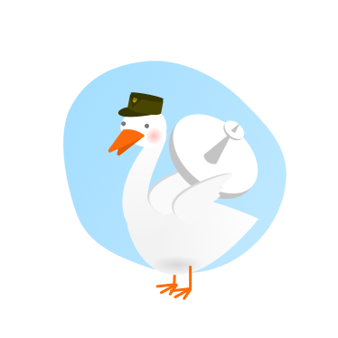

Цікаві факти про бандерогусей
Зазвичай бандерогуси — виключно мирні птахи. Але у разі небезпеки можуть атакувати ворога системою надпотужного озброєння. Також нищать психологічно, активуючи високочастотне шипіння та розмахування крилами

Система навігації
Супутниковий GPS та ехолокатори розпізнають ворожу техніку навіть на етапі збірки
Очі-тепловізори
Допомагають виявити характер сигнатури об’єктів та значно підвищують точність удару
Байракрила
Можуть нести 2-4 керовані ракети, що вражають ціль на відстані «ніхріна собі» кілометрів